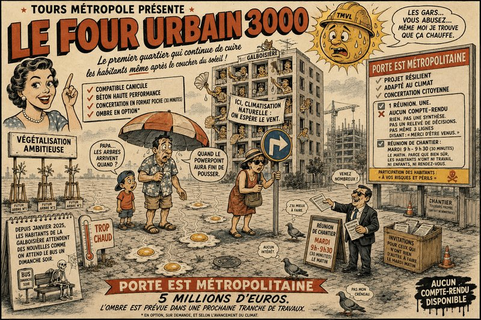

On nous avait vendu un quartier du futur. On a reçu un grille-pain. Cinq millions d’euros de travaux. Cinq Millions.À ce prix-là, tu t’attends à voir pousser une forêt amazonienne. Ben non. T’as surtout de quoi faire cuire un œuf sur le parvis dès que le soleil décide de bosser un peu.
Le plus drôle, c’est qu’avant de sortir les pelleteuses, la Métropole avait un mode d’emploi.
Le CODEV avait pondu un rapport de trente pages. Pas trois lignes sur un coin de table. Trente pages pour expliquer que les villes chauffent de plus en plus, qu’il faut planter des arbres, désimperméabiliser les sols, créer de l’ombre, arrêter de minéraliser à tout-va et penser les quartiers pour qu’on puisse encore y vivre dans vingt ans.
Visiblement, quelqu’un s’en est servi… pour caler une table.
Parce que le résultat, il est là.
Le réchauffement climatique, tout le monde en parle. Mais quand il faut planter trois arbres, là, bizarrement, y’a plus personne.
Par contre, du béton ou de la « dalle »… Ah ça, on maîtrise !
Le béton, c’est formidable. L’hiver c’est froid. L’été c’est chaud. Et la nuit, ça continue à chauffer. C’est un radiateur écologique : il fonctionne sans prise.
Le CODEV dit qu’il faut des espaces de fraîcheur. Nous, on a des espaces de cuisson.
Et puis il y a la concertation.
Une seule réunion. Une. Et évidemment sans compte-rendu et comme j’y étais j’ajoute que ce qui s’est dit n’a pas été pris en compte. Après, rideau.
Depuis janvier 2025, les habitants de la Galboisière attendent des nouvelles comme on attend le bus un dimanche soir.
En revanche, on nous a expliqué sur Facebook qu’on pouvait venir aux réunions de chantier, tous les mardis de 9 h à 9 h 30. Trente minutes. Le matin. Parce que c’est bien connu : tout le monde est disponible à cette heure-là.
Le problème, ce n’est pas de respecter les plans. Le problème, c’est de respecter les habitants.
Parce qu’au bout d’un moment, les habitants ne demandent pas la Lune.
Ils demandent juste de ne pas vivre dans une poêle à frire. Ils avaient les recommandations. Ils avaient les études. Ils avaient les experts. Ils avaient les cartes. Ils avaient les millions. Il ne leur manquait qu’une chose : écouter les gens qui vivent ici.
Abd-El-Kader AIT-MOHAMED Locataire à la Galboisière et « Fier de l’être ».
Membre du Comité populaire et néanmoins bienveillant de Vivre (surtout) Ensemble et (si possible) Solidaires en Métropole Tourangelle (VESEMT)
Sources : – Rapport « Une Métropole en surchauffe ? » (CODEV TMVL, septembre 2023). – Documents publics du projet Porte Est Métropolitaine. – Cette tribune s’inscrit dans les valeurs portées par des citoyen.es engagé.es pour une ville plus fraîche, plus verte et accompagnée par une Métropole plus démocratique.
Commentaires